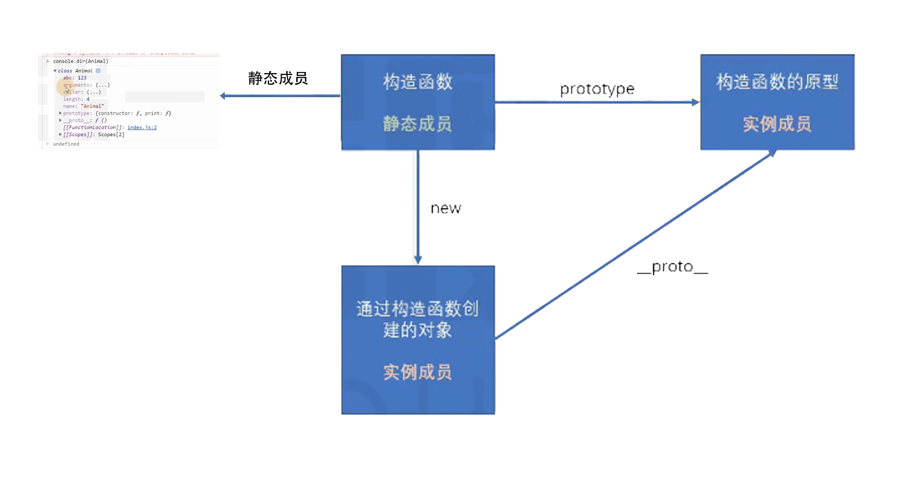
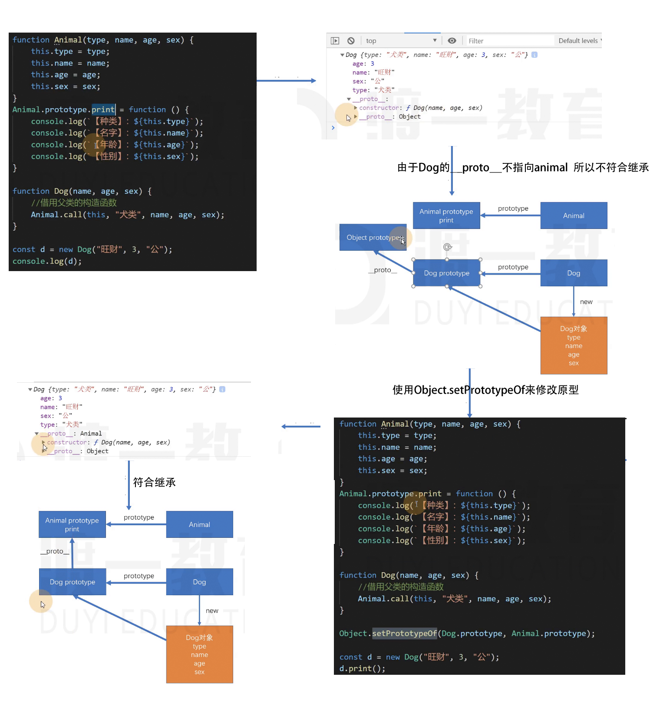
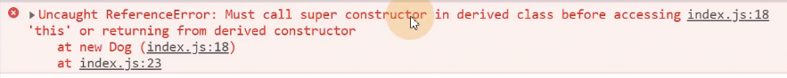

新增的对象字面量语法
- 成员速写
// 原来写法
function createUser(loginId, loginPwd, nickName) {
const sayHello = () => { //这里不是写箭头函数 因为箭头函数里面没有this 而createUser中的this指向window 所以输出的只会是undefined
console.log("loginId", this.loginId, "nickname", this.nickName)
}
return {
loginId: loginId,
loginPwd: loginPwd,
nickName: nickName,
id: Math.random()
}
}
//简写
function createUser(loginId, loginPwd, nickName) {
return {
loginId,
loginPwd,
nickName,
id: Math.random()
}
}如果对象字面量初始化时，成员的名称来自于一个变量
- 方法速写
//原来的写法
const user = {
name: "小满",
age: 2,
sayHello: function() {
console.log(this.name, this.age)
}
}
user.sayHello();
//方法字面量
const user = {
name: "小满",
age: 2,
sayHello() {
console.log(this.name, this.age)
}
}
user.sayHello();
在对象字面量初始化时，方法可以省略冒号和
- 计算属性名
const prop1 = "name";
const prop2 = "age";
const prop3 = "sayHello";
//原来的写法
const user = {};
user[prop1] = '小满'
// ES6的写法
const user = {
[prop1]: '小满',
[prop2]: 2,
[prop3]() {
console.log(this[prop1], this[prop2]);
}
}
user[prop3]();
有的时候，初始化对象时，某些属性名可能来自于某个表达式的值，在ES6，可以使用中括号来标示该属性名是通过计算得到的。
Object的新增API(Object是函数)
- Object.is
console.log(NaN === NaN); //false
console.log(+0 === -0); //true
console.log(Object.is(NaN) === Object.is(NaN)); //true
console.log(Object.is(+0) === Object.is(-0)); //false
用于判断两个对象是否相等，基本上跟严格相等(===)是一致的，除了一下两点：
1) NaN和NaN相等
2) +0 和 -0不想等
- Object.assign
const obj1 = {
a: 123,
b: 456,
c: "abc"
}
const obj2 = {
a: 789,
b: "kkk"
}
// 1.用Object.assign
//将obj2的数据，覆盖到obj1，并且会对obj1产生改动，然后返回obj1
const obj = Object.assign(obj1, obj2);
//让obj1不被改动
const obj = Object.assign({}, obj1, obj2);
console.log(obj === obj1) // true 说明obj1被改动了
// 2.用展开运算符 （更加推荐）
const obj = {
...obj1,
...obj2
}
用于混合对象
- Object.getOwnPropertyNames 的枚举顺序（没什么用……）
Object.getOwnPropertyNames方法在之前就存在，只不过，官方没有明确要求，对属性的顺序如何排序，如何排序，完全由浏览器厂商决定
ES6规定了该方法返回的数组的排序方法如下：
- 先排数字，并按照升序排序
- 再排其他，按照书写顺序排序
- Object.setPrototypeOf
const obj1 = {
a: 1
}
const obj2 = {
b: 2
}
Object.setPrototypeOf(obj1, obj2)
该函数用于设置某个对象的隐式原型(场景：不是构造函数但是又要修改原型)
比如：Object.setPrototypeOf(obj1, obj2);
相当于： obj1.__proto__ = obj2
面向对象简介
面向对象：一种编程思想，跟具体的语言无关
对比面向过程:
- 面向过程：思考的切入点是功能的步骤
- 面向对象：思考的切入点是对象的划分
【大象装冰箱】
//面向过程
//1.冰箱门打开
function openFrige() {
}
openFrige();
//2. 大象装进去
function elephantIn() {
}
elephantIn();
//3. 冰箱门关上
function closeFrige() {
}
closeFrige();
//面向对象
//大象
function Elephant() {
}
//冰箱
function Frige() {
}
Frige.prototype.openDoor = fucntion() {
}
Frige.prototype.closeDoor = fucntion() {
}
Frige.prototype.join = fucntion() {
}
//1. 冰箱门打开
var frig = new Frige();
frig.openDoor();
//2. 大象装进去
var ele = new Elephant();
frig.join(ele);
//3. 冰箱门关上
frig.closeDoor();类： 构造函数的语法糖
传统的构造函数的问题
//面向对象中，将下面对一个对象的所有成员的定义，统称为类
//构造函数 构造器
function Animal(type, name, age, sex) {
this.type = type;
this.name = name;
this.sex = sex;
}
//中间存在别的代码。n行 这样会照成低可读性
//定义实例方法（原型方法）
Animal.prototype.print = function() {
console.log(`【种类】: ${this.type}`)
console.log(`【名称】: ${this.name}`)
console.log(`【性别】: ${this.sex}`)
}
const a = new Animal("狗", "旺财", "公");
a.print();- 属性和原型方法定义分离，降低了可读性
- 原型成员可以被枚举
- 默认情况下，构造函数仍然可以被当做普通函数使用
类的特点
//ES6的类
class Animal {
constructor(type, name, age, sex) {
this.type = type;
this.name = name;
this.sex = sex;
}
print() {
console.log(`【种类】: ${this.type}`)
console.log(`【名称】: ${this.name}`)
console.log(`【性别】: ${this.sex}`)
}
}
const a = new Animal("狗", "旺财", "公"); // 会自动把print放到原型上
a.print();- 类声明不会被提升，与let 和 const 一样，存在暂时性死区
- 类中的所有代码均在严格模式下执行
- 类的所有方法都是不可枚举的
- 类的所有方法都无法被当做构造函数使用 不能const p = new a.print(); 会报错
- 类的构造器必须使用 new 来调用
类的其他书写方式
- 可计算的成员名
//ES6的类
const printName = "print";
class Animal {
constructor(type, name, age, sex) {
this.type = type;
this.name = name;
this.sex = sex;
}
[printName]() {
console.log(`【种类】: ${this.type}`)
console.log(`【名称】: ${this.name}`)
console.log(`【性别】: ${this.sex}`)
}
}
const a = new Animal("狗", "旺财", "公"); // 会自动把print放到原型上
// 调用print方法
a[printName]();- getter 和 setter
ES5 -> Object.defineProperty可定义某个对象成员属性的读取和设置
//ES6的类
const printName = "print";
class Animal {
constructor(type, name, age, sex) {
this.type = type;
this.name = name;
this.age = age;
this.sex = sex;
//ES5的写法 比较麻烦
Object.defineProperty(this, "age", {
set(val) {
},
get() {
}
})
}
//创建一个age属性，并给它加上getter，读取该属性时，会运行该函数
//如果只学get 只能读取不能赋值
get age() {
//加下划线的原因 不希望外界直接访问
return this._age + '岁';
}
// 创建一个age属性，并给它加上setter，给该属性赋值时，会运行该函数
set age(age) {
if(typeof age !== 'number') {
throw new TypeError("age property must be a number")
}
if(age < 0) {
age = 0;
}
else if(age > 1000) {
age = 1000;
}
this._age = age;
}
}
const a = new Animal("狗", "旺财", -100,"公"); // 会自动把print放到原型上
使用getter和setter控制的属性，不在原型上
- 静态成员
//ES6的类
class Animal {
constructor(type, name, age, sex) {
//实例成员
this.type = type;
this.name = name;
this.sex = sex;
}
// 实例方法
print() {
console.log(`【种类】: ${this.type}`)
console.log(`【名称】: ${this.name}`)
console.log(`【性别】: ${this.sex}`)
}
}
// 静态成员
Animal.abc = 'abc';
const a = new Animal("狗", "旺财", "公"); // 会自动把print放到原型上
a.print();
构造函数本身的成员()
使用static关键字定义的成员即静态成员
class Chess{
constructor(name) {
this.name = name;
}
// 静态属性
static width = 50;
static height = 50;
//静态方法
static method() {
}
}
console.log(Chess.width);
console.log(Chess.height);
// 调用静态方法
Chess.method();字段初始化器（ES7）
class Test{ //对于一些成员 本身就有默认值 就可以用字段初始化器 static a = 1; b = 2; c = 3; constructor() { // 字段初始化器相当于在constructor this.b = 2; this.c = 3; this.d = this.b + this.c; } } const t = new Test(); console.log(t)
注意：
1). 使用static的字段初始化器，添加的是静态成员
2). 没有使用static的字段初始化器，添加的成员位于对象上
3). 箭头函数在字段初始化器位置上指向当前对象
class Test {
constructor() {
this.a = 123;
}
print = () => { // 会占用额外的内存空间。因为每次创建对象 都会给这个对象上加入print
console.log(this.a)
}
}
const t1 = new Test();
const t2 = new Test();
console.log(t1.print === t2.print)- 类表达式
const A = class { //匿名类 类表达式
a = 1; //字段初始化器
b = 2; //字段初始化器
}
const a = new A();
console.log(a)类的继承
如果两个类A和B，如果可以描述为：B 是 A，则，A和B形成继承关系
如果B是A，则：
- B继承自A
- A派生B
- B是A的子类
- A是B的父类
如果A是B的父类，则B会自动拥有A中的所有实例成员。
原来的写法
ES6的写法
// 一般父类 不能通过该类来创建对象 class Animal { constructor(type, name, age, sex) { if(new.target === Animal) { throw new TypeScript('你不能直接创建Animal的对象，应该通过子类创建') } this.type = type; this.name = name; this.age = age; this.sex = sex; } print() { console.log(`[种类]：${this.type}`); console.log(`[名字]：${this.name}`); console.log(`[年龄]：${this.age}`); console.log(`[性别]：${this.sex}`); } } // Dog继承自Animal class Dog extends Animal { constructor(name, age, sex) { super("犬类", name, age, sex); //子类特有的属性 this.loves = "吃骨头"; } print() { //调用父类的print super.print(); //自己特有的代码 console.log(`[爱好]: ${this.loves}`); } }
新的关键字：
- extends：继承、用于类的定义
- super
- 直接当作函数调用，表示父类构造函数
- 如果当作对象使用，则表示父类的原型
注意：ES6要求，如果定义了constructor，并且该类是子类，则必须在constructor的第一行手动调用父类的构造函数

如果子类不写constructor，则会有默认的构造器，该构造器需要的参数和父类一致，并且自动调用父类构造器
注意
正常情况下，this的指向，this始终指向具体的类的对象